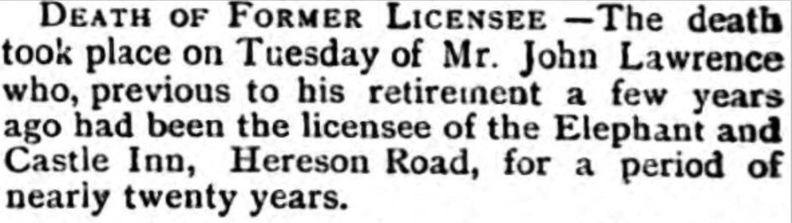

John Lawrence cFeb 1855 - 1915
[ Home ] | [ Calendar ] | [ Surnames Index ] | [ Family History ]A licensed victualler, bricklayer's apprentice, ga's serviceman and beer seller and the child of William Lawrence (a harbor laborer) and Johanna Edwards, John Lawrence, the great-great-uncle of <a href="I1.html">Nigel Horne</a>, was born in St Lawrence, Thanet, Kent, England <i>c.</i> Feb 1855<span class="citation">1,2,3,4,5,6,7</span> and baptized there on Feb 11, 1855. He married Mary Pidduck there, on Feb 14, 1880<span class="citation">9</span>.</p><p>John spent all of his life in Kent, England. Throughout his life, he lived in several places around the county: on Chapel Lane, St Lawrence, Thanet, Kent, England on Apr 7, 1861<span class="citation">10</span>; at Rear of Southwood Lodge, St Lawrence in Thanet on Apr 2, 1871<span class="citation">11</span>; at 20 Southwood Terrace, St Lawrence in Thanet on Apr 3, 1881<span class="citation">12</span>; at his birthplace in 1891<span class="citation">4</span> (the same place as his mother had been living on Jun 6, 1841); on The Australian Arms, 45 Ashburnham Road, St Lawrence in Thanet on Apr 5, 1891<span class="citation">13</span>; on The Elephant and Castle Inn, 5 Hereson Road, Ramsgate on Mar 31, 1901<span class="citation">14</span>; and on 43 Ashburnham Road, St Lawrence in Thanet on Apr 2, 1911<span class="citation">15</span>. <p>He died on Aug 17, 1915 in Thanet<span class="citation">8</span>.
Parents
- William was born c. 1827
- Johanna Brooker was born in 1831
Citations
- 1861 England Census Online publication - Provo, UT, USA: The Generations Network, Inc., 2005.Original data - Census Returns of England and Wales, 1861. Kew, Surrey, England: The National Archives of the UK (TNA): Public Record Office (PRO), 1861. Data imaged from the National
- 1871 England Census Online publication - Provo, UT, USA: The Generations Network, Inc., 2004.Original data - Census Returns of England and Wales, 1871. Kew, Surrey, England: The National Archives of the UK (TNA): Public Record Office (PRO), 1871. Data imaged from the National
- 1881 England Census Online publication - Provo, UT, USA: The Generations Network, Inc., 2004. 1881 British Isles Census Index provided by The Church of Jesus Christ of Latter-day Saints © Copyright 1999 Intellectual Reserve, Inc. All rights reserved. All use is subject to the
- 1891 England Census Online publication - Provo, UT, USA: The Generations Network, Inc., 2005.Original data - Census Returns of England and Wales, 1891. Kew, Surrey, England: The National Archives of the UK (TNA): Public Record Office (PRO), 1891. Data imaged from The National (Relation to Head of House: Head)
- 1901 England Census Online publication - Provo, UT, USA: The Generations Network, Inc., 2005.Original data - Census Returns of England and Wales, 1901. Kew, Surrey, England: The National Archives of the UK (TNA): Public Record Office (PRO), 1901. Data imaged from the National
- 1911 England Census Online publication - Provo, UT, USA: Ancestry.com Operations, Inc., 2011.Original data - Census Returns of England and Wales, 1911. Kew, Surrey, England: The National Archives of the UK (TNA), 1911. Data imaged from the National Archives, London, England.
- England & Wales births 1837-2006 - Findmypast
- England & Wales deaths 1837-2007 - Findmypast
- England & Wales Marriages 1837-2005 - Findmypast
- 1861 England, Wales & Scotland Census - Findmypast (was age 6 and the son of the head of the household)
- 1871 England, Wales & Scotland Census - Findmypast (was age 16 and the son of the head of the household)
- 1881 England, Wales & Scotland Census - Findmypast (was age 26 and the head of the household)
- 1891 England, Wales & Scotland Census - Findmypast (was age 36 and the head of the household)
- 1901 England, Wales & Scotland Census - Findmypast (was age 46 and the head of the household)
- 1911 Census for England & Wales - Findmypast (was age 56 and the brother in law of the head of the household)
Media
Thanet Advertiser 21 Aug 1915

England & Wales deaths 1837-2007 - BMD/D/1915/3/AZ/000523/106
Canterbury Marriages - GBPRS/CANT/M/97021984/1
England & Wales births 1837-2006 - BMD/B/1855/1/HO/000747/012
England Marriages 1538-1973 - R_848394353
England & Wales marriages 1837-2008 - BMD/M/1880/1/AZ/000144/170
1911 Census for England & Wales - GBC/1911/RG14/04528/0367/3
1881 England, Wales & Scotland Census Transcription - GBC-1881-0004864830
1891 England, Wales & Scotland Census Transcription - GBC-1891-0005908096
1901 England, Wales & Scotland Census - GBC/1901/0007450579
England Births & Baptisms 1538-1975 - R_884653775
Family Tree

Generated by Ged2Site. Last updated on Jul 20, 2025